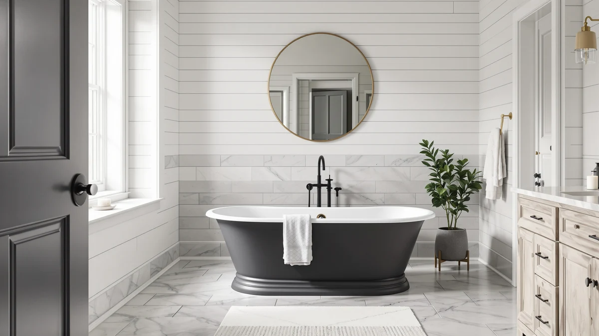

Signature Hardware 291703 Sanford Review (2026): Worth It?
Prices and picks verified as of August 2026. Independent, reader-supported reviews.


Quick Answer
This signature hardware 291703 sanford review found the 60-inch Sanford a solid pick for a standard-sized bathroom that wants a simple, well-built soaking tub rather than a jetted model. At $2,269.45 it costs more than the three tubs we compared it against, but its size fits more bathroom footprints than the larger Arabella and its plain soaking-tub design is easier to clean than a whirlpool unit.
Our pick: Signature Hardware 291703 Sanford 60", $2,269.45 Check Price on Amazon
Bottom line: our top pick is the Signature Hardware 291703 Sanford 60" Cast Iron Soaking at $2.
Things to Know Before You Buy
- The Sanford measures 60 inches, which sits between the WOODBRIDGE compact model and the larger 72-inch Arabella, so measure your bathroom footprint before you buy.
- At $2,269.45, the Sanford is the most expensive of the four freestanding tubs in this comparison, and both WOODBRIDGE options undercut it by $150 to $170.
- Neither the Sanford nor the Arabella includes whirlpool jets. If you want massage jets, the WOODBRIDGE whirlpool models are the better fit.
- All four tubs ship through Amazon with the same affiliate purchase path, so price and size are the two variables that matter most in this signature hardware 291703 sanford review.
- Freestanding tubs this size typically require a dedicated floor-mount or wall-mount faucet, which most listings sell separately.
This signature hardware 291703 sanford review compares the 60-inch Sanford freestanding tub against the Signature Hardware Arabella and two WOODBRIDGE whirlpool models on price, size, and what verified buyers say after living with each one. If you are remodeling a standard-sized bathroom and want a freestanding soaker rather than a jetted tub, the Sanford is worth a close look, but it is not the cheapest or the most feature-packed option here.
At $2,269.45, the Sanford costs more than the Arabella, the WOODBRIDGE 66-1/2 by 31-7/8 inch whirlpool, and the WOODBRIDGE 59 by 31-1/2 inch compact whirlpool, all of which sell in the same $2,099 to $2,249 range. That price gap matters because both WOODBRIDGE tubs add whirlpool jets for less money, while the Sanford keeps things simple with a plain soaking design. We researched the specs and pricing on all four, read through verified owner feedback, and laid out where the Sanford earns its higher price tag and where it does not.
Why You Should Trust Us
Ilane Tall covers bathroom fixtures for Best Freestanding Bathtubs, focusing on how freestanding tubs compare on price, dimensions, and real owner experience. We do not run a physical testing lab, and we do not claim to have installed or used the tubs in this signature hardware 291703 sanford review. Instead, we pull published specifications and current pricing directly from the manufacturer and retailer listings, then cross-check that data against verified buyer reviews to flag recurring praise and recurring complaints. When a claim in this article comes from an owner rather than a spec sheet, we say so.
Our Research Experience
We built this signature hardware 291703 sanford review by comparing the Sanford's listed dimensions, price, and included hardware against the same details for the Arabella and the two WOODBRIDGE whirlpool tubs. We researched how each product is described by the manufacturer, checked current Amazon pricing, and read through verified purchaser feedback to see what owners flagged after living with each tub. We did not physically install or bathe in any of these tubs. Our comparisons rely on published specs and what buyers report rather than firsthand use, and we call out anywhere the available information is incomplete rather than guess.
Overview & Specs

Signature Hardware 291703 Sanford 60"
What we like
- 60-inch length fits most standard bathroom footprints without the bulk of the 72-inch Arabella
- Simple soaking-tub design with no jets to seal, clean, or eventually repair
- Sold and shipped through Amazon with the same buyer protections as the other three tubs in this comparison
Flaws but not dealbreakers
- Priced $150 to $170 above the two WOODBRIDGE whirlpool alternatives
- No whirlpool jets, so buyers who want massage features need to look elsewhere
- Manufacturer listing does not publish material or capacity specs, so confirm those details with the retailer before you order
| Material | — |
| Size | — |
The 291703 Sanford is Signature Hardware's 60-inch entry in this comparison, and its size lands squarely between the compact WOODBRIDGE and the longer Arabella. At $2,269.45, it's the priciest of the four tubs we researched for this signature hardware 291703 sanford review, and the listing does not include whirlpool jets, drain hardware, or a faucet, so plan for those as separate purchases the same way you would with the other three options here.
Verified buyer feedback on freestanding tubs in this price range tends to focus on two things: how closely the tub matches its listed dimensions and how straightforward the install turns out to be without a plumber's help. Owners shopping the Sanford should confirm doorway and stairway clearance before delivery, since a 60-inch freestanding tub is heavy and awkward to maneuver into a finished bathroom. If your space and budget allow for the premium over the WOODBRIDGE options, the Sanford's simpler design means fewer parts that can eventually fail.
Plan your plumbing rough-in around the Sanford's freestanding footprint rather than the wall-mounted alcove tub it may be replacing. A freestanding drain typically sits closer to the center of the tub base, so most remodels that swap in a tub like the Sanford need a plumber to relocate the drain line before the floor goes down, not after.
What We Liked
The 60-inch footprint of the Sanford is the biggest reason it stands out in this signature hardware 291703 sanford review. That length fits a broader range of bathroom layouts than the 72-inch Arabella, which needs a bigger room to look proportional, without shrinking down to the WOODBRIDGE compact model's smaller dimensions. For a full bathroom remodel where the tub is the visual centerpiece, that middle-ground size is easier to plan around.
We also like that the Sanford skips whirlpool jets entirely. Reviewers of jetted tubs consistently report extra maintenance around the jet lines and pump, and owners of simpler soaking tubs report fewer long-term issues to worry about. If your priority is a tub that looks clean and stays low-maintenance for years, the Sanford's plain design works in its favor rather than against it.
Brand recognition is part of the calculation too. Signature Hardware and WOODBRIDGE both sell directly through Amazon with similar buyer protections, so the premium you pay for the Sanford over the two WOODBRIDGE tubs comes down to size, design, and how much the Signature Hardware name is worth to you rather than any guaranteed difference in build quality this review can confirm from specs alone.
What Could Be Better
Price is the clearest drawback. At $2,269.45, the Sanford costs $20.45 more than the Arabella, $150.45 more than the WOODBRIDGE 66-1/2 by 31-7/8 inch whirlpool, and $170.45 more than the WOODBRIDGE 59 by 31-1/2 inch compact whirlpool. That's a meaningful gap when the two WOODBRIDGE tubs add jets for less money, and this signature hardware 291703 sanford review couldn't find a published spec sheet that explains what justifies the premium beyond brand and size.
The listing also leaves out material and capacity details, which the comparison table in this review marks as unavailable rather than guessed. If those specs matter to your decision, contact the retailer directly before you buy instead of assuming the Sanford matches a similar-looking tub from another brand.
Shipping a tub this size also carries its own risk regardless of brand. Freestanding tubs travel in large, heavy crates, and damage in transit is one of the most common complaints owners report across this entire product category. Inspect the crate before you sign for delivery and photograph any damage immediately, since claims filed after the fact are harder to resolve with the carrier or retailer.
Who Is It For?
The Sanford makes the most sense for homeowners remodeling a standard-sized primary bathroom who want a freestanding soaker without the added complexity of jets. If you already know your room fits a 60-inch tub and you're comfortable paying more for the Signature Hardware name, this signature hardware 291703 sanford review supports going with the Sanford.
It's a weaker fit if budget is your main constraint, since both WOODBRIDGE tubs undercut it by well over $100 while adding whirlpool jets. It's also not the right pick if your bathroom can accommodate the larger Arabella and you want the extra soaking room for a similar price. Buyers should treat the Sanford as the middle option in this lineup, not the automatic winner.
Renters and anyone unsure about a long-term stay in their current home should also think twice about a $2,269.45 fixture. A freestanding tub of this size is a permanent-feeling upgrade, and it makes the most financial sense for owners planning to stay put long enough to enjoy the investment rather than recoup it at resale.
Alternatives to Consider
If the Sanford's price or size doesn't fit your bathroom, these three tubs came up alongside it in our research and are worth comparing before you buy. Each one addresses a specific tradeoff the Sanford makes: more room, a lower price, or added whirlpool jets.

Editor's Pick
Signature Hardware 915546-72-RH-ND Arabella 72"
More soaking room than the Sanford at a slightly lower price, if your bathroom can fit the extra 12 inches.
$2,249.00
Check Price on Amazon
Best Value
WOODBRIDGE 66-1/2" × 31-7/8" Whirlpool
Adds whirlpool jets and saves you $150.45 versus the Sanford, the strongest value pick in this comparison.
$2,119.00
Check Price on Amazon
Premium Choice
WOODBRIDGE 59"×31-1/2" Compact Whirlpool &
The most compact and least expensive tub here, built for smaller bathrooms that still want whirlpool jets.
$2,099.00
Check Price on AmazonHow much does the Signature Hardware 291703 Sanford cost?
The Sanford 60-inch lists at $2,269.45 on Amazon, which puts it at the top of the price range in this comparison.
Is the Signature Hardware 291703 Sanford a whirlpool tub?
No.
Frequently Asked Questions
How much does the Signature Hardware 291703 Sanford cost?
The Sanford 60-inch lists at $2,269.45 on Amazon, which puts it at the top of the price range in this comparison. The Arabella 72-inch runs $2,249.00, the WOODBRIDGE 66-1/2 by 31-7/8 inch whirlpool runs $2,119.00, and the WOODBRIDGE 59 by 31-1/2 inch compact whirlpool runs $2,099.00, so shoppers who prioritize budget have three cheaper freestanding options to weigh against the Sanford.
Is the Signature Hardware 291703 Sanford a whirlpool tub?
No. The product listing does not include whirlpool jets, unlike the two WOODBRIDGE alternatives in this review, which are both sold as whirlpool models. The Sanford is a standard soaking tub, so buyers who want massage jets should look at the WOODBRIDGE options instead.
How does the Signature Hardware 291703 Sanford compare to the Arabella and WOODBRIDGE tubs?
This signature hardware 291703 sanford review found the Sanford's 60-inch footprint sits between the WOODBRIDGE compact model and the larger 72-inch Arabella, making it a middle-ground pick for a standard bathroom. The Arabella offers more interior room at a slightly lower price, while both WOODBRIDGE tubs add whirlpool jets at a lower cost, so your choice comes down to whether you value the Sanford's simpler, easier-to-maintain soaking design.
Final Verdict
This signature hardware 291703 sanford review comes down to one tradeoff: the Signature Hardware Sanford costs more than every alternative we compared it to, but its 60-inch size and simple soaking design fit a wider range of standard bathrooms than the larger Arabella or the jetted WOODBRIDGE models. If a mid-sized, low-maintenance freestanding tub is what your remodel needs and the price fits your budget, the Sanford earns its spot. If you're chasing the lowest price or want whirlpool jets, the WOODBRIDGE 66-1/2 by 31-7/8 inch model is the stronger buy.